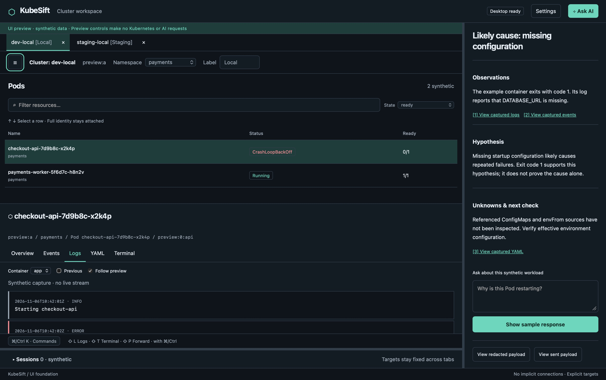

The six-task UI foundation is implemented and packaged locally. Automated checks and the scoped native walkthrough passed with the limits below. User visual approval remains the gate before Phase 1C. No merge, release or Phase 1C work was performed.
Scope and artifact
Based on approved planning commit dee18e0, branch feature/phase-1b-ui-foundation. See the
approved specification,
six-task plan
and screenshot manifest. Final local executable SHA256:
3b96f78b28b6688123a626d32aa52dcdb6ce953b4d93536b98bfc73f55467721. Finder launched the packaged app to Desktop ready.
Local ad-hoc signature verification passed; release signing and notarization remain out of scope.
Product shell, independent tabs, resource detail/evidence, simulated reviews, inert sessions, command palette, appearance preferences, pane resizing and right-side AI preview are delivered. Preview controls never call Kubernetes or AI services. Welcome opens no cluster automatically. The retained live validation controller stays mounted once opened, and its explicit close-all uses the existing connection-close protocol. The separate preferences service persists only appearance and geometry. No credentials, context identities, session state or conversations are persisted.
Acceptance results
| Specification item | Actual result and evidence |
|---|---|
| 1. Failing-Pod workflow / visual hierarchy | Native synthetic Pod selection, Overview, Logs, Events and read-only YAML are available in both themes. Log evidence consistently reports missing DATABASE_URL and exit code 1. Previous disables follow. Hostile fixture annotation/log content remained inert text. The full-screen screenshot shows the explorer and right-side AI hierarchy; user visual review is pending. |
| 2. Independent identities / frozen review | Behavior test verifies same-named A/B resources retain independent namespace/filter/detail/scroll and review target; closing A invalidates its review without affecting B. Native tab switch retained A sessions and AI citations. Native modal blocks background navigation, starts on Cancel, traps focus and Escape cancels. Pointer-trigger focus was made explicit after the walkthrough exposed Safari's non-focusing button behavior; final package opens/cancels the review, but tool AX did not conclusively report restored button focus. |
| 3. Themes / persistence | Light and Dark selected in Settings and persisted over native restart. Workspace/session identity survived changes. System selected successfully and follows matchMedia in source with listener cleanup; actual OS appearance transition was unrun because Computer Use denied System Settings access. Two focused Go cases cover strict persistence, rejected-save preservation and display clamping. Invalid-file/reset UI is implemented; native corrupt-file injection was not performed. |
| 4. Adaptive windows | Native dimensions 1920×1080, 1440×900 and 1100×700 were confirmed from saved logical bounds; both appearances exercised. Wide supports side-by-side list/detail; laptop stacks them with scrolling while AI stays right. Minimum candidate needs scrolling and benefits from collapsing nav/dock. Pure clamping tests cover off-screen and smaller work areas. Physical monitor disconnect remains unrun. User requested stopping further size investigation and expects full-screen use on laptop/external monitors; native full-screen shortcut was sent. No stronger minimum-size or multi-monitor compatibility certification is claimed. |
| 5. Sessions / cleanup | State case covers hide/show, tab changes, cancelled closure and owner-only confirmed closure. Native kind-dev-local/payments/ks-validation log, terminal and loopback-forward sessions survived Settings, Light/Dark and product-preview navigation. Benign printf output remained without command replay; logs continued with visible bounded trimming. Explicit close-all returned native sessions/queued/in-flight bytes to zero, UI listeners from 2 to 1 and goroutines to 13. Forward port 60116 returned the synthetic fixture before close and refused connections afterward. |
| 6. AI preview | State case preserves captured A identity/evidence across B, Settings and close/reopen; null target remains null until explicit rebind. Native sample response and citation on B still showed A identity. Same right panel remains available on Settings; normal/live mode explains Phase 2 with no collection. Payload presentations are fixed examples labeled nothing sent, not a functioning redaction pipeline. |
| 7. Honest availability / keyboard / errors | Explicit synthetic banner and grouped unavailable destinations; loading, empty, forbidden, disconnected, stale, unsupported and missing-dependency presentations are distinct. Arrow selection and Cmd+Shift+L selected A logs; Cmd+K while filtering did not open the palette. Native focus trap/Escape checked. Exhaustive screen-reader and all error-state interaction testing were not performed. |
Checks and review
scripts/check.sh passed on the final code: source descriptions, documentation links, gofmt, go test ./...,
go vet ./..., npm test (4 cases in 2 files), ESLint and TypeScript.
wails3 task package regenerated bindings, built frontend/native assets and packaged successfully. Final
documentation/source/whitespace checks ran after this report. The existing Go suite required sandbox escalation for its loopback
HTTP test; its initial sandbox-only failure was not a code failure. Existing macOS linker deployment-target warnings remain.
Toolchain: Go 1.27.3, Wails 3.1.0, final checks/package Node 26.13.0/npm 11.20.0; early task frontend checks used available Node 25.9.0. Host: macOS 26.7.1 build 25G241, arm64 Apple M2 Pro. Final full-screen capture is 3024×1898 pixels at 2× scale, approximately 1512×949 logical content.
Independent whole-branch correctness then hygiene review found one Important issue, KSF-001: Dark product tokens made retained validation input values dark-on-dark. It was reproduced in the packaged app and corrected with scoped light control backgrounds/foregrounds, preserving the live terminal theme and lifecycle. Subsequent full gates passed. No Critical findings or deferred minors. Native walkthrough also corrected misleading home copy for hidden live sessions and explicit initiating-button focus. No backend connection, session, flow-control, trust or operation service implementation changed.
Remaining limits and handoff
User visual review is outstanding. OS appearance transitions, physical monitor disconnect, native corrupt-settings injection and conclusive automated AX focus-return evidence remain unrun or qualified. Computer Use produced intermittent screenshot errors during the multi-size walkthrough; only the final unretouched full-screen capture and local continuity capture are retained. The user explicitly stopped further resize investigation in favor of full-screen review.
The
Phase 1A backgrounded WebKit log-loss limitation
is unchanged. This milestone does not establish sleep/wake, cloud/OpenShift authentication, other platforms, minimum macOS support,
signed distribution, Lens/K9s parity or real AI integration. Future live explorer work remains Phase 1C and AI remains Phase 2. The
tracked
.superpowers/sdd/status.md checkpoint supports resuming on another laptop; detailed operational logs remain ignored.
Header review follow-up
Removed the routine desktop readiness badge while retaining startup failure feedback. Ask AI now becomes Hide AI while open and closes the panel without unmounting its conversation. Frontend tests (4), lint, typecheck and production build passed. The screenshots below predate this small header update; a native click walkthrough has not been repeated for this follow-up.
UI review images
Full-screen / Dark · Local session continuity


